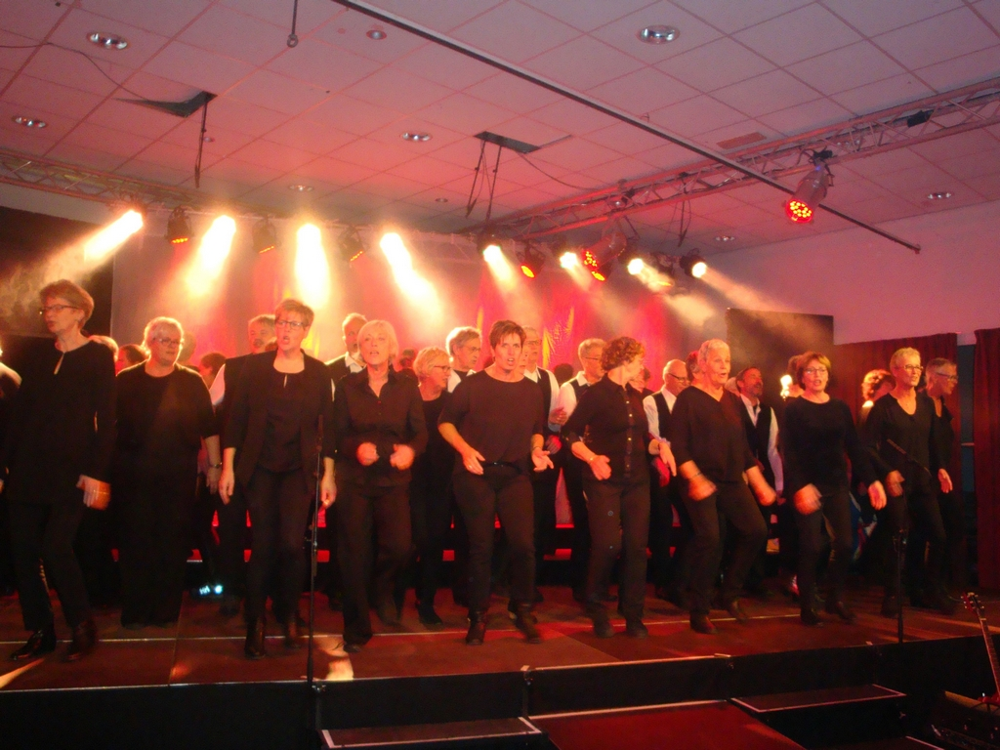

Het verhaal achter Mix of Music
In 1997 is Mix of Music opgericht en het koor bestaat nu uit 50 enthousiaste dames en heren. Omdat wij niet gebonden zijn aan een bepaalde stijl of levensovertuiging zingen wij, onze naam zegt het al, een muzikale mix aan nummers en stijlen: van musical tot rock en van pop tot een klassiek nummer.
De nummers worden drie- tot soms acht-stemmig uitgevoerd en bij optredens wordt zonder bladmuziek gezongen.

Dirigent
Studeerde aanvankelijk piano- en schoolmuziek aan het Brabants Conservatorium in Tilburg. Later verruilde hij deze opleiding voor orkest- en koordirectie aan het Sweelinck Conservatorium in Amsterdam bij Joop van Zon, waar hij in 1994 zijn studie afrondde. Hij werkte als begeleider mee bij het Internationaal Vocalisten Concours in 's-Hertogenbosch en was als assistent-dirigent verbonden aan de Vlaamse Opera.
Repetitor / Pianist
Al sinds 2001 actief als pianist bij Mix of Music. Samen met het koor heeft hij al verschillende grote producties vormgegeven. Het geeft een groot gevoel van saamhorigheid. Dat is het bijzondere van zo'n project, dat je niet meer met zingen bezig bent, maar dat je met enthousiasme en hard werken boven jezelf uit kunt stijgen.
Voorzitter
Secretaris
Penningmeester
Bestuursleden: Diana van Demen, Twan van de Veerdonk
Bezoek een repetitie op donderdagavond om acht uur in Vidi Reo te Ravenstein. Je mag eerst drie repetities komen proeven of het je bevalt om samen met ons te zingen.
Samen met Lex (de dirigent) ga je in de loop van tijd kijken bij welke stemgroep jij het beste tot je recht komt.
Neem Contact OpRavensteinse ondernemers die ons koor een warm hart toedragen.
Wilt u ons ook steunen? Informeer naar de mogelijkheden.